Reading: Chapter 3
History and philosophy of science
Scientific investigation is one of the key skills that allow human communities to adapt their environments to their own needs and lead to the apex role humans have in their environment.
Defining precisely what science is is not a trivial question, and an entire field of philosophy concerns itself with this question. But in the broadest sense, science is the collective process of organizing known and quantitatively verifiable facts about natural phenomena in a coherent framework that allows us to understand, explain, and predict said phenomena.
How this is done in detail throughout the history of humanity is inextricably intertwined with technological developments that allow the quantitative verification of factual information.
A brief history of astronomy
As the record-keeping and description of the motion of celestial objects (though the course of a night, a month, and years), astronomy must be one of the oldest scientific endeavor of humanity.
- the sky night was accessible to every culture (before light pollution was a thing)
- knowledge of the sky night offered solutions to practical time-keeping and navigation issues
Every community on Earth has observed the sky, and every community has needed time-keeping (the regularity in the apparent motion of the sky provide a natural clock) or navigation! Knowing when cold or harvest season are coming, or being able to navigate in the night are needs that can be met with naked eye observations of the sky, and we can be sure that every community in the history of humanity has developed some form of astronomical understanding (and associated mythology to transmit this knowledge across generations, see Constellations).
This is because: It took about 200 years, starting in the 1600s, for astronomy and physics to converge into astrophysics, that is the application of the physical laws that apply on Earth and in laboratories to explain the observed astronomical phenomena.
As a "system of organizing knowledge", scientific thinking lived under the broader umbrella of philosophy for most of human history. However, within (western) philosophy one would typically distinguish astronomy as the description of celestial (as in non-Earthly) phenomena and physics as the study of nature as it works on Earth. These two were clearly distinguished and separated in the Aristotelian framework of a sub-lunar (Earthly) world and the super-lunar ideal world made of geometrically perfect circles. Seeking the same explanations for both "classes" of phenomena was an absurd program in context.
This occurred first with:
- 16-17th century scientific revolution: unification of gravity on Earth and orbital motion of planets by Newton
- 19th century technological advance: the ability to use spectra of light to determine the chemical composition of stars revealed the same materials in astronomical setting and on Earth.
Astrophysics allows to test a lot of our physical understanding of natural processes in conditions that cannot be replicated in a laboratory experiment (e.g., the highest energy particles ever detected are cosmic rays, not at LHC or Fermilab, or it is impossible to make experiments on amounts of mass larger than the mass of the Earth on this planet, etc.), which have often probed and exposed the limits of understanding at a given time, allowing for further refinement and progress.
Achievements of ancient astronomy
Most cultures have developed some investigation of astronomical phenomena for both practical and religious/ceremonial purposes. All these have as a pre-requisite careful observations and an organized system to verify and pass-on knowledge, the roots of scientific endeavors.
While all these culture live(d) on the same planet under the same sky (modulo variations due to their position on Earth), not all focused on and recorded the same phenomena.
For example, western culture strongly influenced by Aristotelian thought, was mostly concerned in finding perfect regularities in the "super lunar" world. This framework lead to a lot of recording of repeating regular phenomena and hard to predict patterns (planet motion, eclipse predictions, etc.).
Viceversa eastern-Asian cultures (China, Korea, Japan) were interested in documenting the changes in the sky, which left much better record of unusual, non-repeating phenomena (e.g., the appearance of "new sources", such as the explosion of a star becoming visible from Earth), which although presumably visible in the western sky too, were largely ignored.
The knowledge and use of astronomy by ancient cultures still reflects on many aspects of language, commonly used units (degrees, weeks, months, etc.), and archaeological evidence.
Architecture
Lots of architecture across many disparate cultures is organized around astronomical events. Many buildings and even entire cities/citadels built across the world by very different cultures are aligned along the East-West or North-South direction, so that sunrise and/or sunset can produce particular light alignments and effects.
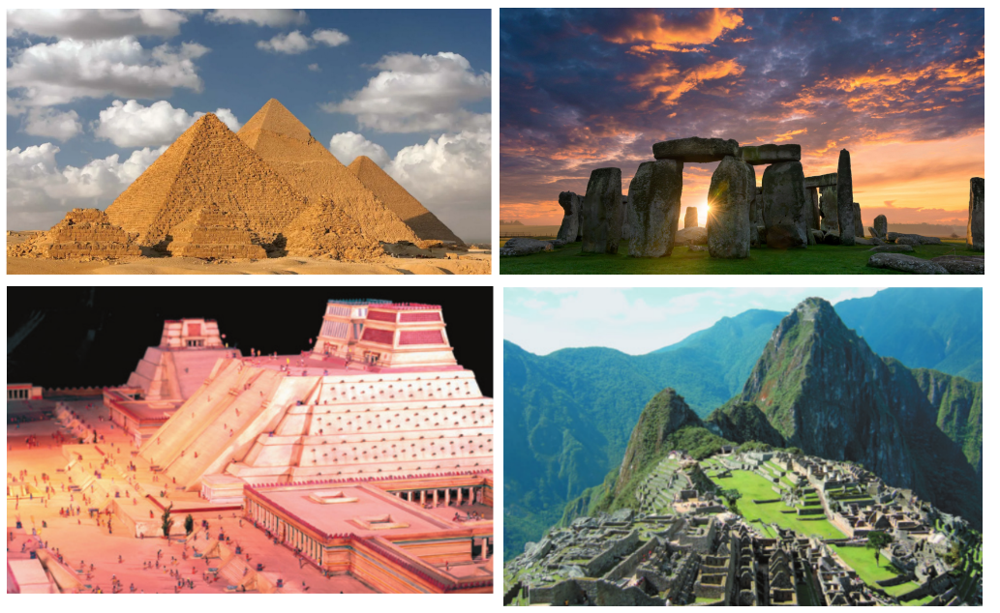
A modern example is NYC, whose grid is not perfectly aligned in the North-South/East-West directions, and therefore experiences "Manhattanhenge" a few days before/after the equinoxes:
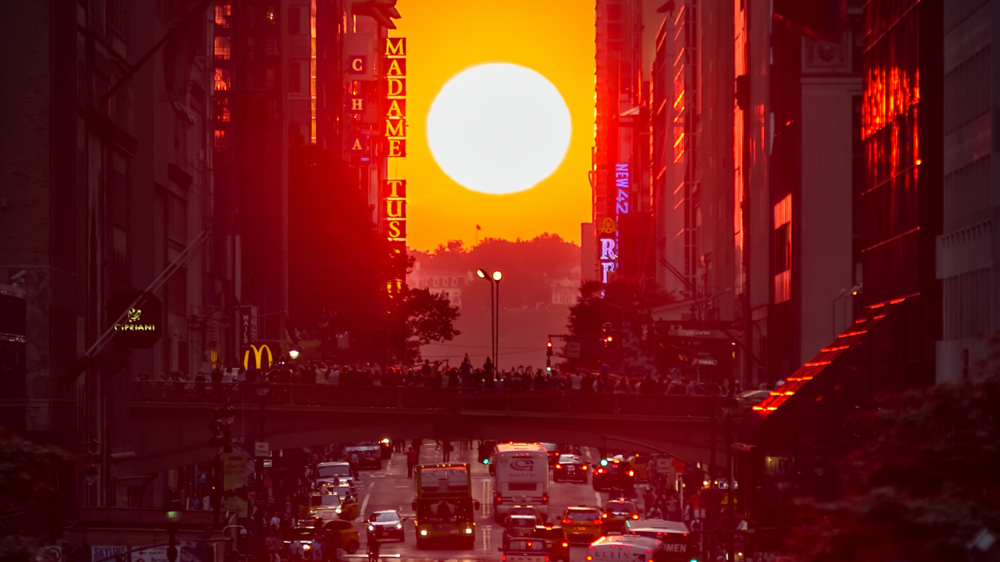
Astronomical time-keeping
Within the day, shades cast by long objects can be calibrated to make a sun-dial. This is one of the primary uses of, for example, Egyptian obelisks. The division of day-time in 12h (i.e., a full day in 24h) rather than 5 or 10h/day dates back to ancient Egypt choices (again mathematically justified by the large number of integer divisors of 12, allowing for easy sub-divisions.)
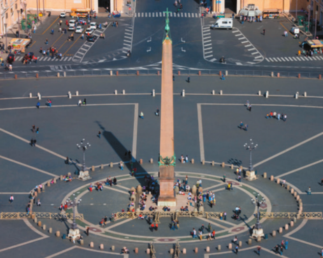
A common example of use of astronomy for timekeeping are the name of the week days: in English, they are named after the Sun, Moon and the 5 naked-eye planets. By the classical definition, a planet ("wanderer") is anything moving in a "special way" in the sky including the Sun and the Moon!
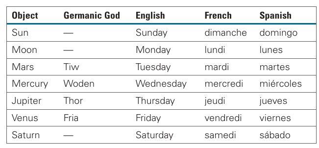
The word "month" itself is related to "Moon", as it is approximately the amount of time it takes between a new and full moon (i.e., for the satellite to go around the Earth).
On a longer timescale of several months, astronomy allows to predict seasons and likely weather conditions - a great help for agricultural planning. In central Africa, certain cultures used the orientation of the illuminated part of the Moon to foresee the advent of the rainy seasons:
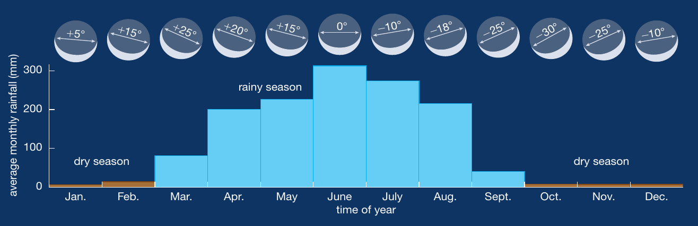
Note that at the equator (central Africa), specifically between the tropics, the variations in Sun exposure and inclination during the year are fairly minor, resulting typically in just two seasons, rainy and dry.
N.B.: The astronomical observations relevant to a specific culture correlate with and are influenced by the geographic position of that culture which determine what observations are more relevant. Another example is Polynesian explorers who combined knowledge of currents/swells and astronomical positions to navigate enormous distances.
Some cultures were so precise in their observations that they became aware of secondary cycles in astronomical phenomena. For example, the orbit of the Moon around the Earth is slightly deformed (eccentric), and the most elongated direction slowly rotates too (precession of the nodes) with an 18.6 years period. This causes a periodic shift in the position of the rise of a full moon over this time, which is marked by the "Sun Dagger" made by Ancestral Pueblo people:
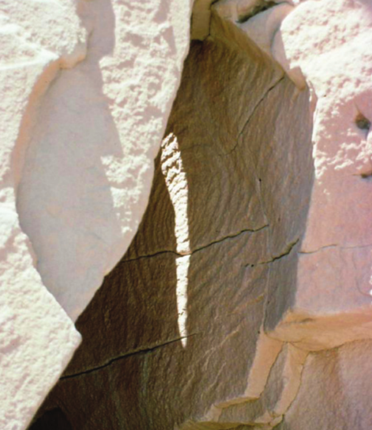
Calendars
Various people in antiquity tracked long-lasting astronomical changes to create calendars, and keep track of time throughout a year, and as the years pass.
The modern standard calendar is based on the motion of the Earth around the Sun (solar calendar), but calendars based on the motion of the Moon around the Earth exist and are still in use (e.g., muslim or jewish calendars).
Because the Moon's period is 29.5 days, 12 rounds of the Moon around the Earth take 12× 29.5 = 354 days, 11-less than it takes the Earth to go around the Sun. This explains why lunar calendars drift by this amount every year w.r.t. the solar calendar, requiring periodic "adjustments" to maintain certain astronomical events (e.g., solstice/equinoxes) in the same month.
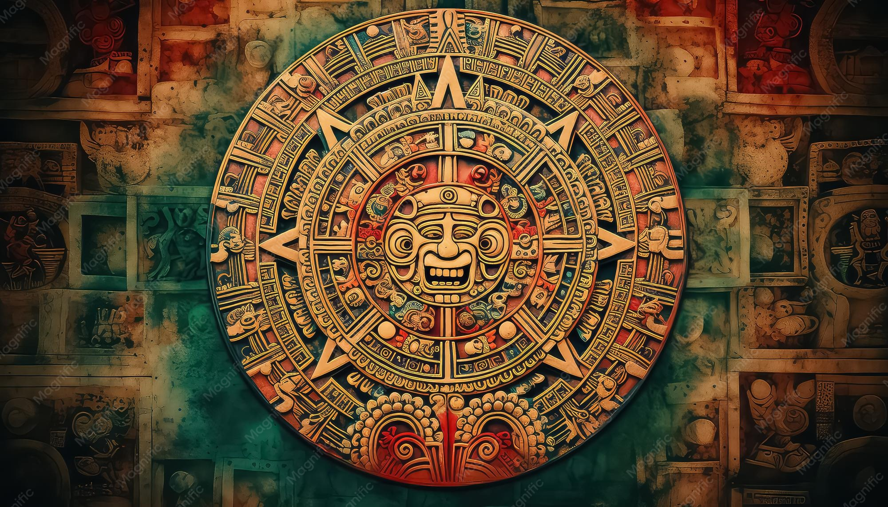
Development of scientific ideas
Scientific ideas, developed based on quantitative and objective observations and aiming at explaining them without any super-natural element, have come with human societies all along their history.
We can follow a specific example, which is models of the Solar system to see how they developed.
Ancient greece
By being at the intersection between Africa, Asia, and Europe, ancient Greece was a place where ideas and cultures mixed which produced a lot of innovative and foundational ideas.
Among these, also ideas on the structure of the Universe based on mathematical (which at the time meant geometrical) models. These models were spread through Asia and North Africa by Alexander the great (who had been Aristotle's student), and refined and expanded especially in Alexandria in Egypt, famous for its library as a cultural center, while most of the Greek's and Hellenistic philosopher's thoughts were lost in western Europe. With the burning of the library, the major cultural center in the world moved from Alexandria to Baghdad, where influences from Persian, Indian and eastern Asian's thought mixed in. With the advent in the Ottoman empire (ruling over Baghdad) of more religious conservative regimes, a lot of intellectuals fled towards Europe (especially through merchant routes towards Italy). They brought with themselves translations in modern languages of the ancient Greek texts and this was crucial to seed the renaissance and the Scientific revolution of the 1600s often ailed as the "birth of modern science".
N.B.: Science has always been a collective, multi-cultural, across-borders endeavour throughout history, that advances through small contributions by multiple individuals.
Skipping through a lot of important steps:
- Aristarchus: first philosopher to consider heliocentric models of the Solar System (at the time there is no distinction between Solar System and whole Universe!), however this does not gain traction because of the lack of stellar parallax in a year, interpreted as evidence that the Earth cannot be moving around the Sun.
- Anaximander: introduced the idea of Earth sitting at the center of space (geocentrism), surrounded by concentic spheres moving Sun, Moon, and planets.
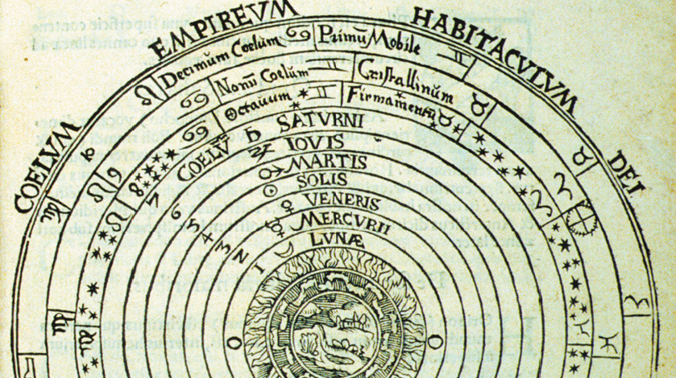
- Pythagoras: The Earth itself is a sphere (more for ideological reasons than empirical ones)
- Eratosthenes: First measurement of the radius of the Earth using the shade cast by a stick across two cities in Egypt (reaching ∼ few % precision)
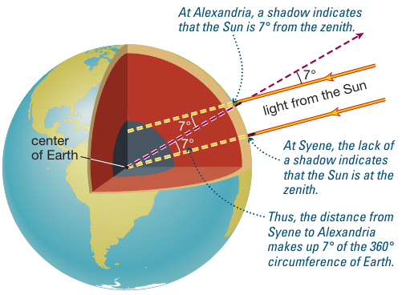
- Plato: idealization of the super-lunar world, which should be described only with perfect shapes (spheres)
- Aristotle: introduces the concept that the spheres are not just an idealization, but real physical objects.
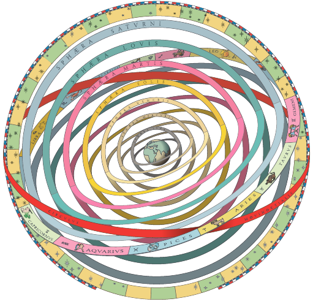
- Ptolemy: this geocentric always had issues with the motion of planets, but was naturally explaining the lack of parallax. To explain retrograde motion of the planets, Ptolemy added the idea of epicycles: planets don't orbit the Earth on a circle in a sphere, but they orbit a circle whose center is on the sphere:
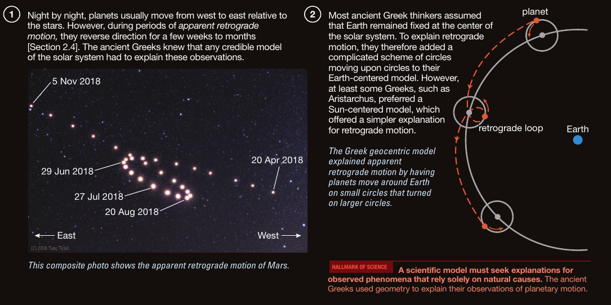
- Copernicus: revives Aristarchus heliocentric idea to calculate planet positions, but keeps perfect circles.
- Tycho Brahe: naked eye precise observations from Danemark allow for unprecedented precision astrometry (especially of Mars). Wanted to generate a heliocentric model to explain the data, but still only using circles.
- Kepler: abandons circular orbits, enunciates phenomenological descriptive laws of the planetary motion abandoning the idea of perfect circles. The orbits of planets must be on eccentric orbits with the Sun occupying one of the foci. Kepler's laws explain the motion of planets and allow for unprecedented precision in astronomical observation. Empirical evidence supports it, and the only last argument against it is the lack of parallax of stars in the night sky. The full dataset used by Kepler is available online and weighs only 400kB.
Galileo:
- demonstrates Galilean invariance, no need to feel a "wind" if Earth moves,
finds Medicean satellites
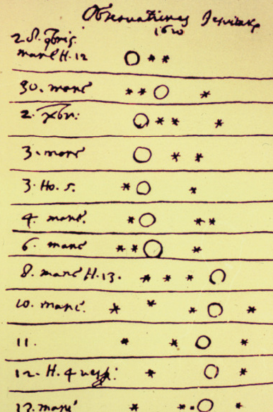
Figure 11: Notes by Galileo Galilei from 1610 showing the first detection of 4 satellites of Jupiter (the circle) clearly not orbiting the Earth but something else. - phases of Venus, evidence that Venus orbits the Sun and not the Earth
mountains on the moon, evidence that the "super-lunar" world is not perfect, but ragged as everywhere on Earth
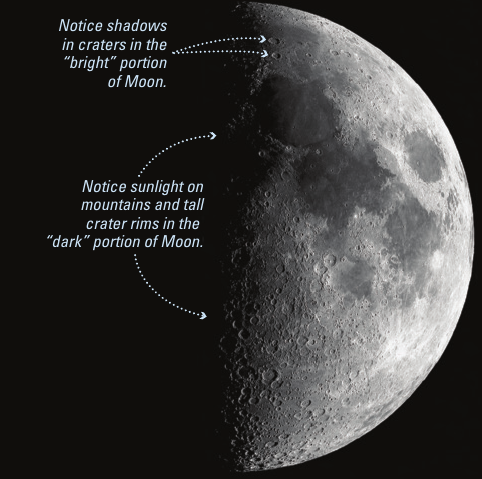
Figure 12: Moon's mountains demonstrate that it is not a perfect sphere as postulated in Aristotelian thought. - and shows how the Milky way is made of a lot of tiny stars, suggesting that stars may be much farther than previously thought and possibly explaining the lack of parallax.
Note how technological advances (the invention of the telescope in the Netherlands, and the conceptualization and improvements brought to it by Galileo) that allow new evidence that changes which model is favored.
- Newton: makes the first big step in unifying astronomy and physics by unifying the law of gravity on Earth (how object fall) with the orbits of planets and showing how Kepler's laws are a natural consequence of the "Universal law of gravitation". We will discuss this in more detail later.
Scientific models
To achieve this level of predictions of astronomical phenomena and competency in using them (for navigation, time-keeping, and cerimonial effect), all these cultures engaged in some form of scientific investigation.
What "science" is exactly is surprisingly hard to define, and certainly has evolved with human cultures. Still in the 20th and 21st century, philosophers debate important details of the definition, while most scientists are not directly concerned with the general definition.
Fundamentally, science requires making objective observations (e.g., where the Sun rises on a given day), and formulating a hypothesis that may explain said observation without resorting to super-natural explanations. From the hypothesis, testable consequences should follow. This is Karl Popper's falsificationism: an hypothesis need to lead to testable predictions to be scientific, something typically missing in anything trying to "predict the future". The hypothesis can thus be tested on its predictions of observations/experiments, and either refined or confirmed.
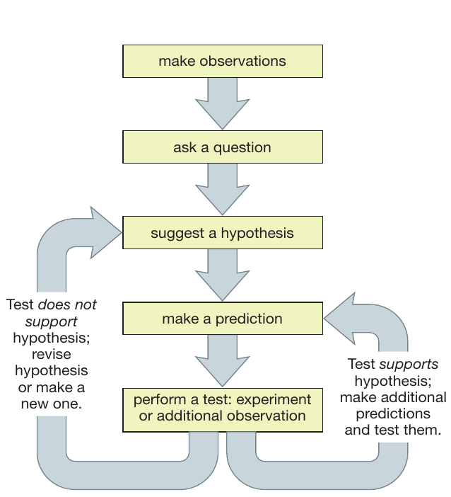
However, Popper's falsificationism is only a part of the story: many scientific theories have remained fashionable and dominant for centuries while observations falsifying them were available.
The most notable example is perhaps the precession of Mercury: the small deformation in Mercury's orbit shifts position every year at a rate incompatible with Newton's law of Gravity, a fact that was well known and waved away for centuries before Einstein's theory of general relativity could reconcile the understanding of gravity with the observations.
Therefore, while the basic process of falsificationism governs the day-to-day performing of experiments, there is an overarching scientific culture which determines on which problems to focus and which problems can be set aside and/or explained away as "special cases" during normal science. Only when technological and/or theoretical advances allow a new point of view on these normally ignored problems they become of interest and this can lead to a scientific revolution (these are the ideas of Thomas Kuhn, Imre Lakatos, etc.).
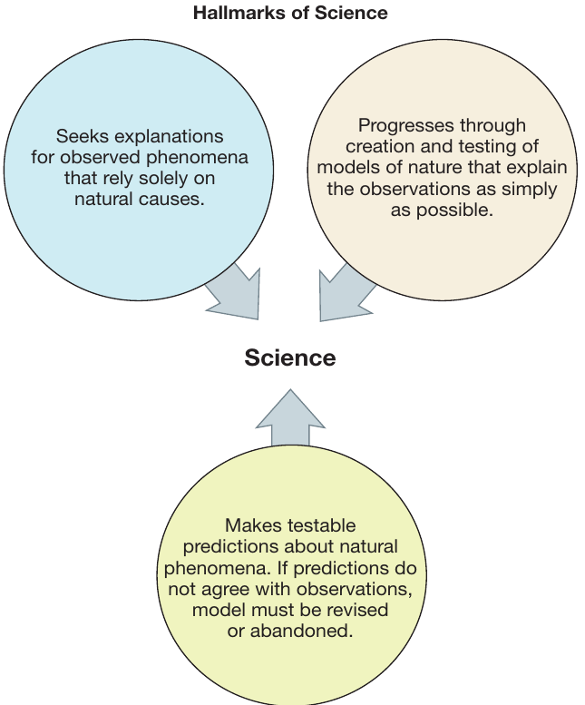
Note how every culture has applied consistently seeds of these method in various settings, suggesting maybe that the successfulness of this approach will naturally be recognized by human cultures, which will always tend towards understanding the world in a quantitative and actionable way.
Occam Razor
Another key tenant of scientific investigation is to strive for simplicity. This doesn't mean shying away from complex math (often physicists have had to develop or rediscover new forms of math for their needs), but it means that a good scientific theory has to make the smallest possible number of assumptions to explain the largest number of phenomena.
This is often referred to as "Occam's razor", because the simplicity criterion allows to shave off most explanation and prefer always the simplest one.
For example: in ancient Greece most thinkers favored a geocentric model of the Universe. This was the simplest at the time: it did not require to explain the lack of parallax observed for stars, despite requiring adjustments (in the form of epicycles) for 5 special objects (the planets), the Sun and the Moon.
But with Copernicus calculations and Kepler's laws, the simpler model became a heliocentric one, where no object required any special explanation (planet motion is perfectly explained), as the main argument against geocentrism became progressively weaker with the realization that stars are much farther than originally thought.